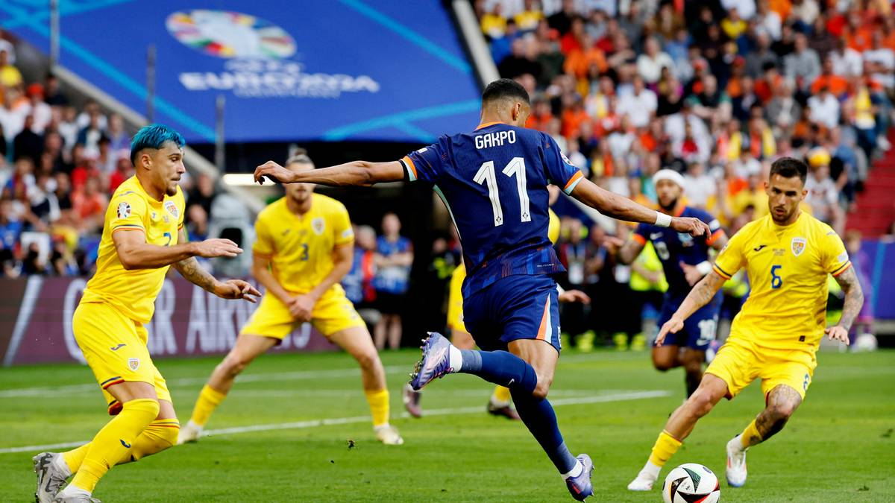

Voetbal is een heel populaire balsport. Het gaat erom dat je de bal in het doel schiet bij jouw
tegenstander.
Bij voetbal heb je nodig: twee teams, een bal, een veld met doelen en lijnen, een scheidsrechter, een
grensrechter en doelen. Natuurlijk zijn er ook regels om het goed te kunnen spelen. Voetbal is voor alle
geslachten en voor jong en oud.

Regels
Als je met je hand de bal raakt, komt er een vrije trap. Als je een speler tackelt van achter, krijg je
een gele kaart en mag de getackelde een vrije trap nemen. Een vrije trap betekent dat je de bal weer in
het veld mag schoppen vanaf de plek waar het incident was. Bij je eerste gele kaart gebeurt er verder
niks, maar als je in die wedstrijd een tweede gele kaart krijgt wordt dit gerekend als een rode kaart,
zoals hierboven beschreven. Als een regel binnen het strafschopgebied wordt overtreden,
krijgt de tegenstander een strafschop. Dit geldt niet voor een terugspeelbal. In dat
geval wordt er altijd een indirecte vrije trap genomen. Niet alleen spelers in het veld
maar ook coaches, trainers en spelers in de reserve kunnen kaarten krijgen. Toeschouwers worden als ze
overlast veroorzaken simpelweg door de beveiliging weggehaald en krijgen vaak een langdurig verbod om
nog bij wedstrijden te komen.